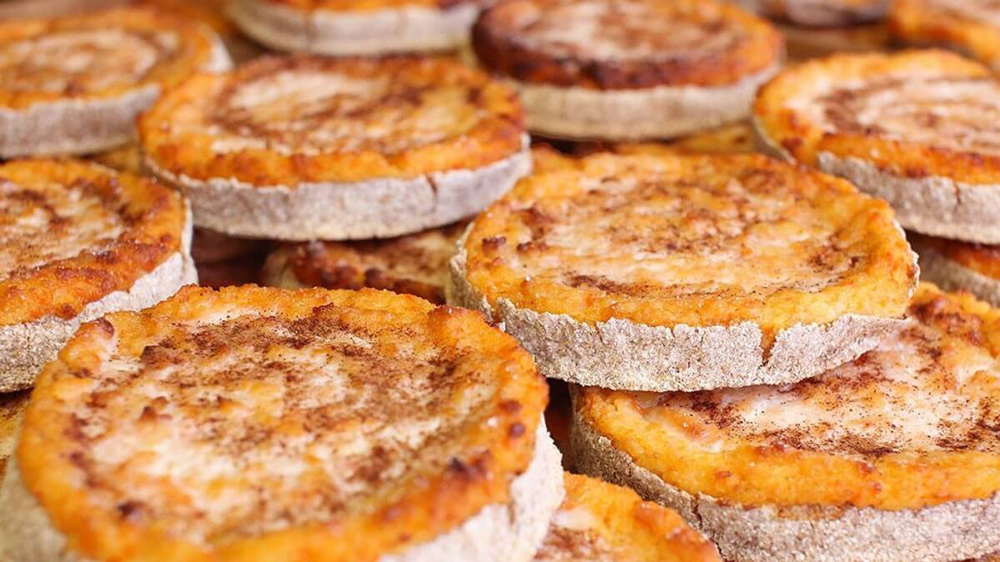

Sklandrauši
Sklandrausis anses vara Lettlands nationalrätt, eftersom man har tillagat och ätit dem i många generationer. Det är en söt paj, gjord av råg deg och fylld med potatis- och morotpasta. Denna maträtt äter man under alla årstider och är älskad av letterna.Läs mer.
Rödbetssoppa / Biešu zupa

Kallt ute? Blir du sugen på varm soppa? Gör en sagolik rödbetssoppa med pepparrotsyoghurt. Härlig färg-, doft- och smakupplevelser. Serveras med ett gott bröd.Läs mer.
Söt brödsoppa / Maizes zupa
Maizes zupa är ett utsökt sätt att använda rester av rågbröd eftersom det kokas i vatten på låg värme och infunderas med sötma från torkade frukter. Tillsatsen av kanel, kryddnejlika och lite brunt socker ökar rågens smakfulla smak. När det är klart, servera kallt och toppa med vispad grädde.Läs mer.